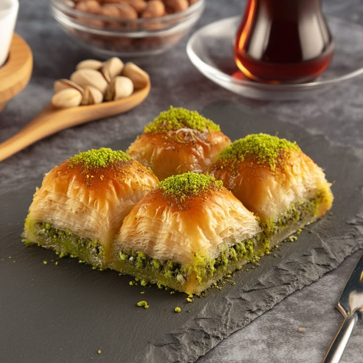

Baklava

PaÃs: TurquÃa
Tipo: Vegetariana
Momento: Postre
Duración: 1.5 horas
Porciones: 12
🧂 Ingredientes
- 1 paquete de hojaldre filo (500 g)
- 2 tazas de nueces
- 200 g de mantequilla
- 1 taza de miel
👨‍🍳 Pasos
- Triturar las nueces
- Armar capas de hojaldre y nueces
- Hornear a 160°C por 45 min
- Bañar con miel caliente